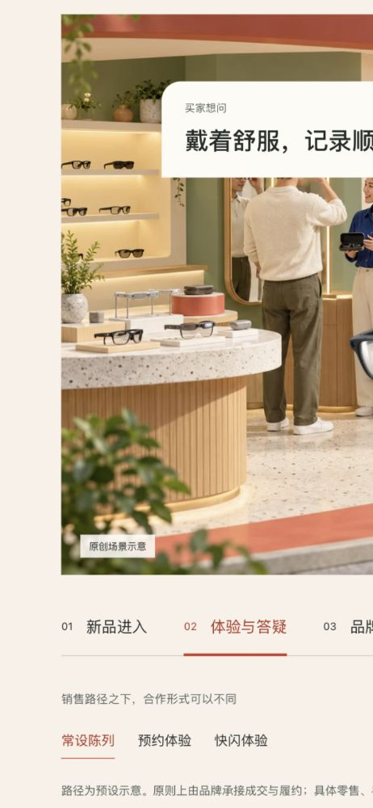
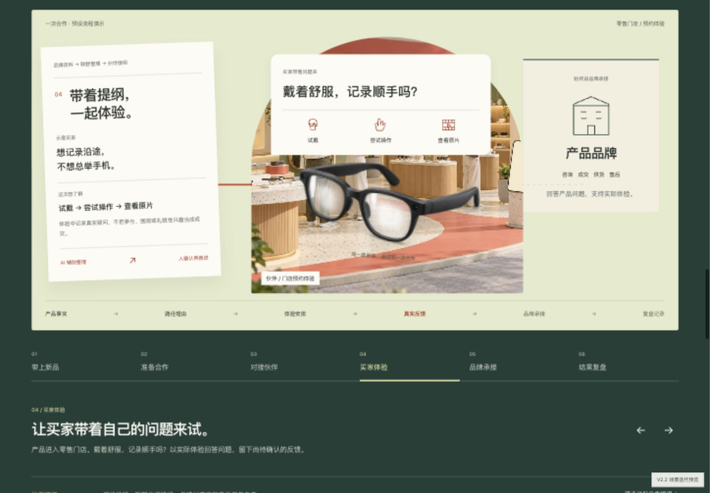

独立预览 · 未替换线上官网让产品和资料，
沿着同一次合作向前走。
01 将三条路径做成样机进入、体验提问、品牌承接三个动作。02–03 保留同一产品、共享资料和品牌位置，六步连续变化；三条路径会同步改变理由、提纲与体验场景。
实际浏览器画面


真实切换录像
实际浏览器录制，无真实AI、订单或合作结果。完整页面与状态
设计规范、叙事与验收说明
已检查54个主要路径与合作状态，并补查手机、平板与桌面。未完成用户审美验收、真实设备及公网性能验收。人物场景仍为静态原创建图，动作由前端图层完成。
名单不代表已合作。真实付费、销售表现、AI效率增量与可复制增长均待实际项目验证。